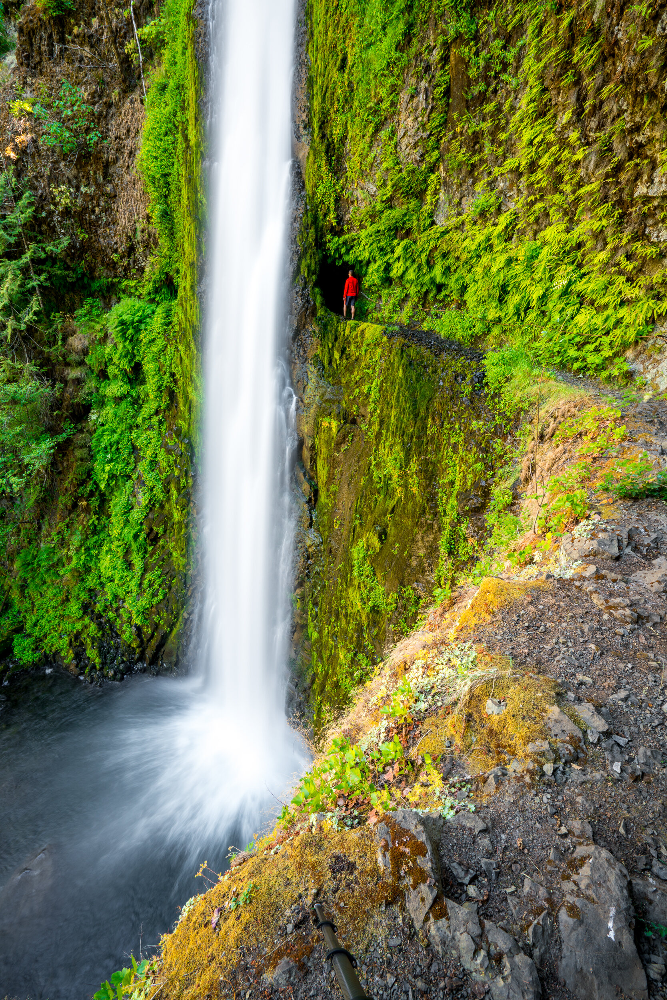
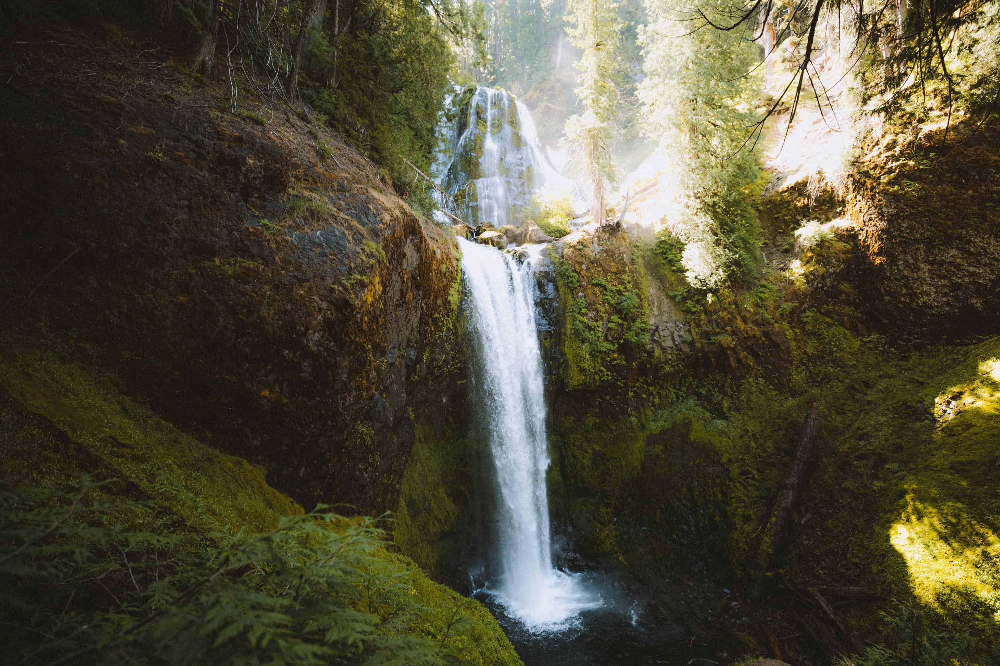

In The City
Laurelhurst Park

-
Take a walk or have a picnic in this cute park. Extend it by wandering around the cute neighborhood or walking to nearby food and drink.
-
Best time to go: Year-round, on a dry day.
-
Tip: In the summertime, there’s often free live comedy and silent disco here!
Cathedral Park

-
Have a picnic under this iconic bridge, walk across it and go on a hike in Forest Park, or check out the St Johns neighborhood for food and drink.
-
Best time to go: Year-round, on a dry day.
-
Tip: In the summertime, there’s a free Jazz Festival here! There’s also other live music and events that happen, so keep an eye out.
Hikes
Lower Macleay Park to Pittock Mansion

-
Drive time from Portland: 15 minutes
-
Mileage: 5
-
Best time to go: Year-round, on a clear day
-
Tip: Hike past Witches Castle and see a great view of Portland! Option to take a
paid tour of Pittock Mansion when you’re there.
Angles Rest

-
Drive time from Portland: 30 minutes
-
Mileage: 4.5
-
Best time to go: Year-round! Great easy hike for Winter and Spring weekends or a perfect after-work hike in Summer.
Eagle Creek Trail to Tunnel Falls

-
Drive time from Portland: 40 minutes
-
Mileage: 12
-
Best time to go: Winter or Spring for peak flow, after a dry spell for a less muddy trail.
Camassia Preserve Loop Trail

-
Drive time from Portland: 20 minutes
-
Mileage: 1.5
-
Best time to go: April-Early May.
-
Tip: Stop in Oregon City on the way there or back.
Falls Creek Falls Loop

-
Drive time from Portland: 1 hour 15 minutes
-
Mileage: 6
-
Best time to go: April-May.
-
Tip: Pair with a stop in Carson, WA for some food.
White River Falls

-
Drive time from Portland: 2 hours
-
Mileage: 1
-
Best time to go: Spring before the falls dry up.
-
Tip: Make it a weekend trip and camp at Macks Canyon Campground where there’s hiking from your tent.
Columbia Hills Vista Loop

-
Drive time from Portland: 1.5 hours
-
Mileage: 6.5
-
Best time to go: Late April-May for wildflowers.
-
Tip: These wildflowers are lower elevation than Dog Mountain so their peak bloom happens first.
Dog Mountain

-
Drive time from Portland: 1 hour
-
Mileage: 6.5
-
Best time to go: Late May-Early June for wildflowers.
-
Tip: Go after work (eat dinner before!) to avoid crowds and not have to deal with getting a permit. Stay for sunset for the best views.
{kind=link}
{kind=link}
{kind=link}